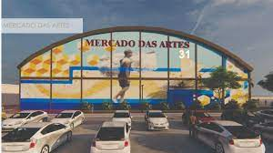
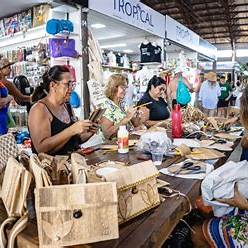
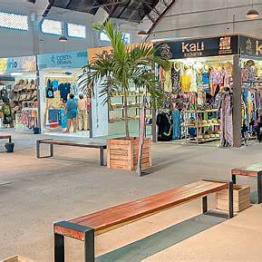
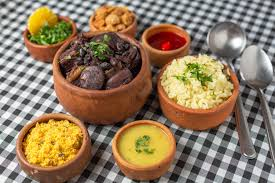

~Mercado 31~

Mercado das Artes 31, situado no charmoso e histórico bairro de Jaraguá, em Maceió, é um dos mais recentes e vibrantes pontos turísticos da capital alagoana. Mais do que um simples centro comercial, o Mercado é um verdadeiro celeiro de cultura, tradição e criatividade, dedicado a exaltar a arte, o artesanato e a rica gastronomia do estado de Alagoas. Instalado em um antigo armazém de açúcar do século XIX, o espaço passou por uma cuidadosa revitalização arquitetônica, preservando sua estrutura original de galpão industrial com pé-direito alto, colunas de ferro e tijolos aparentes — uma combinação que une o charme do passado com a funcionalidade moderna. Com 2.800 m² de área construída, o Mercado abriga mais de 110 espaços comerciais, entre lojinhas de artesanato, ateliês de artistas, estandes gastronômicos e pequenos negócios locais. Cada canto do Mercado convida o visitante a uma imersão sensorial e cultural: o aroma dos pratos típicos, as cores vibrantes dos produtos artesanais, o som da música nordestina ao vivo, e o sorriso acolhedor dos expositores tornam a experiência marcante. O lugar se transforma em um ponto de encontro entre o tradicional e o contemporâneo, onde turistas e moradores podem conhecer de perto o que Alagoas tem de mais autêntico.
-Artesanato: tradição e identidade cultural

O mercado destaca-se por peças artesanais que utilizam técnicas tradicionais e materiais regionais. Entre os destaques estão:
- Bordado filé e renda: técnicas tradicionais que resultam em peças delicadas e detalhadas.
- Esculturas em madeira e barro: obras que retratam a cultura e o cotidiano alagoano.
- Produtos em palha e cerâmica: itens decorativos e utilitários feitos com materiais naturais.
Lojas como Santo Forte, Oxente Arte e Belusca são conhecidas por oferecerem peças exclusivas de artistas locais, incluindo obras da renomada Ilha do Ferro, no Sertão alagoano.
Moda: estilo com identidade regional

A moda no Mercado das Artes 31 é marcada por peças que combinam estilo contemporâneo com elementos da cultura local. Os visitantes encontram:
- Moda praia: roupas leves e coloridas, ideais para o clima tropical.
- Acessórios artesanais: bolsas, bijuterias e outros itens feitos com materiais naturais e técnicas tradicionais.
-Gastronomia local

A gastronomia é uma das grandes estrelas do Mercado das Artes 31, em Maceió. O espaço é um verdadeiro convite aos sentidos, onde o paladar se encontra com a tradição e a criatividade da culinária alagoana. Cada prato servido ali carrega histórias, ingredientes típicos e muito sabor, proporcionando aos visitantes uma verdadeira imersão nos sabores do Nordeste brasileiro. Logo ao chegar, o aroma das comidas típicas desperta a curiosidade e o apetite. É impossível resistir aos clássicos como o cuscuz nordestino, servido com queijo coalho ou carne de sol, a macaxeira na manteiga de garrafa, o sarapatel bem temperado e os frutos do mar frescos, como o sururu, o camarão e a lagosta, preparados com aquele toque caseiro que só a cozinha nordestina tem. Para quem busca algo mais leve ou prático, o mercado também oferece uma seleção de lanches e petiscos regionais, como o tradicional pastel com caldo de cana, tapiocas recheadas, pamonhas e bolos de milho. Os doces típicos, como cocadas, bolos de rolo e compotas de frutas da terra, fazem a alegria de quem gosta de um bom café com sobremesa.
Comidas sureridas

- Chiclete de camarão: Camarões envoltos em molho cremoso e queijo
- Siri mole ao coco: Siri mole refogado com leite de coco, cebola, pimentão, coentro, tomate, farinha, e mandioca
- Macaxeira com carne de sol
- Caldinho de sururu: Caldo saboroso feito com o molusco sururu
- Moqueca de frutos do mar: Preparada com peixes frescos e leite de coco
- Pituzada: Camarões grandes cozidos em molhos ricos
- Carne de sol com feijão verde, queijo coalho, arroz e vinagrete